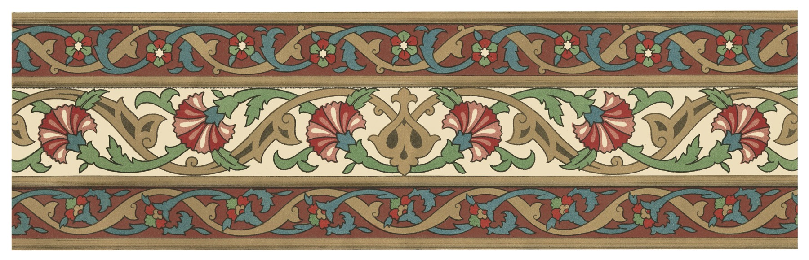

American Muslim Identity
Notes on authenticity, Blackamerica, and the making of an American Muslim culture


The struggle for authenticity is certainly not a unique phenomenon to the American Muslim endeavor. All groups, from Blacks to the Irish, the Jews to the Japanese, have all made strides to ensure their authenticity in the American social fabric. To a great degree, save for Blacks, that process of authenticity has often been hand in hand with becoming white. But for Muslims, and especially Blackamerican Muslims, the quest for authenticity will have to be sought by alternative means.
In fact, in the case of Blacks, half of the problem is already solved. For in the American social context, there are two primary modes of acceptable being: white and black. And while not always accepted by the dominant culture, blackness has established itself as a legitimate means of being American.
The 400 years of forced servitude and the culmination of the Civil Rights Movement have ensconced Blacks a space in the American social sphere. So why this quest for legitimacy if we’ve already arrived?
That was the question I was hoping to ask you. All rhetorical jokes aside, Blackamericans were born out of a quest for dignity, for legitimacy. Hundreds of years of white supremacy and Jim Crow continued to force Blacks to look for alternative means of legitimacy and belonging.
It is not hard then, in the light of history, to understand the development of the early pseudo-Islamic groups such as the Nation of Islam and the Moorish Science Temple. Surrounded by not only socially by whites but supported by the government, Blacks were engulfed in a struggle for survival and dignity. And at a time when there were no social organizations to provide civil liberties and protections to Blacks, organizations like the NOI provided many Blackamericans with a safe haven. The organization looked after the needs of the Black community. It cared for its citizens, who it saw as its own. It provided Blackamericans with a sense of belonging, a sense that is still felt to this day.
Few have pondered as to why Islam appeals to Blackamericans specifically (and not, for example, poor Whiteamericans), from the 60’s up to the present day. Why is it that a Blackamerican man or woman can enter into Islam and sacrifice nothing of his or her blackness; his or her Americaness. It is greatly due to the social influence that groups like the NOI had on the collective Black psyche, and vis-a-vie, American psyche. Whiteamericans, having not had an Islamic agency of their own, have to risk crossing significant social barriers in order to enter into Islam, what Dr. Sherman Jackson terms, “social, ethnic, apostasy”.
Continuing in this same vein, with the comfort level that Blackamericans have at their disposal, why does Islam, as it relates to Blackamericans, seem to be primarily concerned with everything but Blackamericans, or perhaps even America as a whole? Out of all ethnic groups in America, Blackamericans are perched on a most unique and crucial outcropping, in that they are the only indigenous American ethnic group to have a significant portion of their population (numbers have been estimated between 10% and 13%) affiliated with Islam (I know some will object to these numbers but we must keep in mind that these projections include all groups that claim adherence to Islam, be it orthodox, NOI/heterodox, sufi, Sunni, Shi’ah, lay member and devotee, and others. Any time spent in just about any major urban center in America from Philadelphia, to Detroit, New York City to Chicago will bear these numbers out).
While it is not the aim of this post to go into great depth and detail, a short summary of the social and psychological history of Blackamericans who entered in Islam should suffice to carry us through to the latter points of this essay. But to begin, there are two main events that provide a suitable backdrop. One, is the aforementioned legacy of white supremacy in America, of which I have mentioned sufficiently on, and the other is the influx of Muslims into America from the historical Muslim world. It is Blackamerica’s confrontation with the latter that has led to many of the present day stance, opinions and maladies that Blackamerican and I dare say, American Islam, continue to face.
The 1960’s saw the alteration of immigration laws that greatly affected the influx of Muslims from around the world (mainly South East Asia and the Middle-East). These Muslims, hailing from the historical Muslim world, brought with them not only a set of cultural practices but they also instigated a significant problem for the pseudo-Islamic groups like the NOI, primarily on theological and cultural grounds.
To summarize, if these Muslims hailing from Pakistan and Syria could not be considered Muslim, then who could. So in short time, the legitimacy of pre-orthodox Blackamerican Islam was called into question and large numbers of Blackamericans shifted camps from the NOI to the various orthodox Muslim groups. It is also important to note the contribution of the late Warith Deen Mohammed, son of the Nation of Islam founder, Elijah Mohammed, in moving significant portions of the NOI to orthodox, mainstream Islam.
But these shifts from one camp to another would not come without issues. Serious issues, that continue to haunt not only Blackamerican Muslims, but especially in a post-9/11 America, the very enterprise of Islam in America.
While unaware in its inception, certainly both groups, Blackamericans as well as immigrant Muslims, shared a common mistrust of America as a whole. Muslims coming from the historical Muslim world, arrived with a number of prejudices of America and “the West”. Prejudices born out of two hundred years of post-colonialism. This post-colonial psychology mixed quite well with the established mistrust that Blackamericans had of American white supremacy. While their vernaculars were very different, they were nonetheless quite compatible and in short time, white supremacy would be replaced with anti-American sentiment. It is these two bedmates that would carry much of the outlook that Muslims in America would have until 9/11.
It has been said that up until the tragedy of 9/11, America had yet to be firmly grounded in post-modernity. Without a doubt, the attacks in New York City and elsewhere have firmly grounded the American psyche in post-modernity. But aside from giving America a set of coordinates to locate herself, it also served as a clarion call for Muslims in America to address themselves.
Since then, Muslims in America have been stirred up like a beehive without the direction of a single queen. Instead, individuals and small groups have buzzed around, as often to attack themselves as who kicked the hive in the first place.
Immigrant-led Islam has taken its own direction. Pre-9/11, it was mostly concerned with assimilation. But in a post-9/11 era, it is faced with being the poster child of all that is wrong in the world. Attempts to foster a legitimate American Muslim expression have been replaced with appeasement of the dominant culture. And while this state is not meant as a blanket one, it has to a great extent influenced the psychology behind immigrant Muslim activities. Attempts have been made to utilize the legacy of civil rights and that of Dr. Martin Luther King Jr. but most efforts have left them looking awkward and out of place (these Muslims are not to be faulted in looking towards the legacy of civil rights and Dr. King but they must understand why they are perceived as unwelcome beneficiaries to that legacy, especially pre-9/11, it could have not been further from their agenda. But to properly address this issue would require a whole other set of works and research).
In the end, 9/11 left both indigenous Blackamerican Muslims and immigrant Muslims charged with dereliction of duty and facing a court-martial from the American public. The self-aggrandizement of the immigrant community came to a screeching halt as they became the target of American public outrage. And as the public conversation over what did and what did not constitute Islam, indigenous Blackamerican voices were not heard, mainly due to our own faults.
Having spent the last four decades trying to find work acting in someone else’s play, we missed a key step in the development of our Islam – a key development the late Warith Deen Mohammed understood quite well. Without the formation of a healthy, viable, tangible, justified and legitimate American Muslim identity and culture, it was only a matter of time until we or especially the next generation slip off into the oblivion of domesticated religion. And while the slope is slippery and we have not a lot of time left, there’s still a chance to pull back before we tumble over the brink. God willing.
The paradox of the individual and the society: only individuals act. Society, culture, social structure, power, groups, organizations, all are dependent on individuals. Individuals can only act through the acquisition of skills obtained through their society (how does this relate to the formation of American Muslim culture and its efficacy?). American Muslims must examine their motives, orientations, knowledge, and skills they are acquiring in this context.
Religious belief is profoundly influenced by culture: What people believe in, the choice(s) of what to believe in are not merely biological/innately psychological (fitrah) but cultural patterning. How do people learn what to believe in? With others they can be religious with? How does this shape how they act with this belief?
Social structure and its maintenance: An example of social structure: class (pg. 6 JH). Human life is highly repetitive (Muslim/Islamic life?). Everyday actions (eat, sleep, prayer, making love) seem to be powerfully influenced by class (perhaps not prayer?). The actions have a cumulative effect of sustaining class structure without the implied intentions of doing so and without them being recognized as such (this could be a critical point for American Muslim culture). Sociologists: need to have a theory of action, an account of how people actually form their conduct in everyday life that can then relate to the society and culture their conduct both sustains and modifies (read Muslims for sociologists).
If your family tree was a bit stunted simply acquire some old European art, collect and co-opt it to give you a sense of wealth and culture (belonging). At this time, the museum replaced the church as the place of civic worship for the middle class. Taken advantage of due to lack of identity. This may relate to Islam in America. The idea that elite art had an intrinsic value that lay outside of its current historical (all histories?) context.
Muslims may be falling prey to what “rational-legal legitimation” or simply rational-cultural legitimation. In the absence of an indigenous Muslim culture fostered by American Muslims, American Muslims must then resort to the rational-cultural legitimation of Islam in some other time and in some other place. To help illustrate this point I will lay out some of the basic precepts of Max Weber’s “rational-legal legitimation”. It is from this that I borrow the concept and run a rational-cultural legitimation alongside it.
In Weber’s “rational-legal legitimation”, laws are considered legitimate or valid so long as they are authenticated by the mechanisms of a formally rational procedure. In other words, legitimation of law takes form when it passes through these procedures. In pre-Weberian models, laws were considered justified and legitimate when they were consistent with traditional values, i.e., the sacred.
If we examine Weber’s presumption – that as traditional values wane, they are replaced by procedures that facilitate the production of new laws – where these new laws are considered not only valid but incumbent upon the community to follow [i.e., a new “sacred”]. The Weberian model simply substitutes one [moral value commitments] for a new one [rational-legal legitimation].
It is here that American Muslims are caught in the lurch. For despite the perceived importance of such procedures [here, we can read procedures for foreign-born/perceived to be foreign-born Muslim practices], there can be no hope of fostering both a legitimate and justified American Muslim culture so long as the context, values and substance of such a culture is always perceived as “over there”. Without such, an American Muslim culture can never hope to be seen as valid by the dominant society, by American Muslims themselves and its hopes of continuity and efficacy will be dashed on the rocks.

Written by
Imam Marc Manley
Resident Imam, Middle Ground · Host of the Middle Ground Podcast